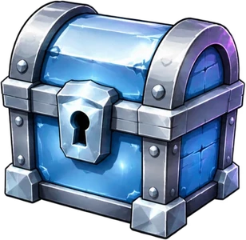
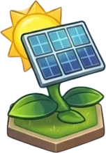
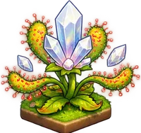
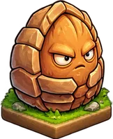
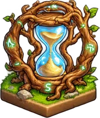
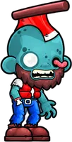
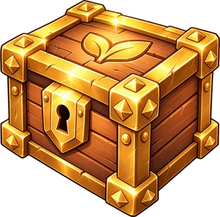
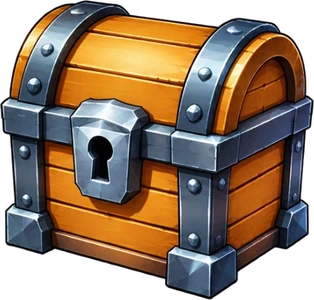
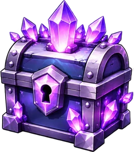
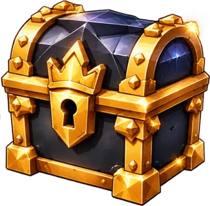

Plant vs. Yield Docs
Plant vs. Yield is a tower-defense yield game. Your garden is your portfolio: plant crops that mint $COIN, defend your lanes against waves of zombie traders, and grow your share of the daily reward pool. Don't get rugged.
Waitlist & Silver Box
The waitlist gives you early access and a launch reward. It takes about 2 minutes on plantvsyield.xyz:
- Connect X: sign in with X. We only read your username and picture.
- Follow @PlantVsYield.
- Like & Repost the waitlist post.
- Quote the waitlist post, then paste the link of your quote.
- Comment on the waitlist post, then paste the link of your comment.
- Add your wallet: connect any browser wallet or paste your Robinhood Chain address (0x…).
Quote and comment links are checked automatically: they must be public posts from the X account you connected.

FREE Silver Boxfor every waitlist member
Every approved waitlist wallet receives a Silver Box the first time it logs into the game. One box per wallet.
How to start
- Open the site and connect your wallet.
- Sign the access message. It is not a transaction and costs no gas.
- Press Start and place your first plants.
Your garden
The battlefield is a grid of lanes. Zombies walk in from the right; you place plants on the open tiles to stop them. The first waves only use the middle lanes, and new lanes open as the waves climb, so plan ahead and cover every row before it's too late.
Synergy: every plant you own boosts your total income by 4%. A bigger garden earns faster, but it is also more to defend.
Plants
Buy plants from the Market with $COIN. They fall into a few roles:




Plants have five rarities: Common, Uncommon, Rare, Epic and Legendary.
Zombies & waves
Zombie traders march in waves, and every wave is bigger and tougher than the last. Each type has its own trick: some are fast, some are armored, and some steal your money.

Don't leak: if 10 zombies slip past your defense, the market collapses and 10% of your Bag burns.
Whale Boss
If the Whale Boss reaches the left edge: MARKET CRASH, and your run is over.
Rent
Garden rent is due every 5 minutes. Miss it and your income drops by 80% while zombies move 50% faster, until you pay.
Upgrades & RUG
Select a plant to level it up for more yield and more power. High-level upgrades carry a risk: an upgrade can RUG and destroy the plant. The higher you push, the bigger the risk.
Market crash & Rebirth
A crash isn't the end. The $COIN you spent during the run turns into Golden Fertilizer, an income multiplier for the rest of the day. Golden Fertilizer resets daily.
$PVY token
$PVY launched as a fair launch on Pons, Robinhood Chain: no presale and no private round. This is the only official address; always check it here or on @PlantVsYield before you interact with a token.
$PVY will be used in the game for rare Mystery Boxes, the Premium Pass and Farmer NFTs. In-game features using $PVY are rolling out after launch.
$COIN
$COIN is the in-game currency. You earn it from producer plants and spend it on plants, upgrades, rent, Mystery Boxes and garden plots.
Bag → Daily Pool → Bank

Bank- Bag: a share of every $COIN you earn drops into your Bag. Premium Pass boosts can raise this rate for a while.
- Daily Pool: deposit your Bag into the daily reward pool. When the day ends, the reward is split by everyone's share. The payout happens every day at 00:00 UTC.
- Bank: your pool share lands in your Bank. Withdraw it, or convert it back into in-game $COIN.
The pool page shows a live ranking of every wallet's share.
Mystery Boxes
Mystery Boxes drop seeds. Higher tiers give better rarity odds:
| Box | What to expect | |
|---|---|---|
 | Common Box | Mostly common seeds, a small chance of something rare. |
| Silver Box | Starts at Uncommon, with real Rare and Epic chances. Waitlist reward. | |
 | Crystal Box | Starts at Rare, with multiple seeds. |
 | Whale Box | The strongest box: Epic and Legendary seeds. |
Seeds & merging
Plant seeds in your Garden for daily Bank income, or merge 3 seeds of the same rarity for a chance to roll a rarer one. Unlocking extra garden plots costs $COIN, and every plot you open makes the next one more expensive.
Farmer NFT
Mint your Farmer and pick a boy or a girl. Your Farmer joins the daily pool with you.
- Your Farmer starts with 100 durability.
- Every zombie that leaks past your defense costs 1 durability.
- At 0 durability the game stops until you repair it.
Premium Pass
Defeat zombies to earn XP and unlock rewards level by level: boxes, seeds, and temporary $COIN and Bag-rate boosts.
Fair play
Cheating, botting, exploiting bugs, multi-accounting or fake waitlist entries are not allowed. Wallets that break the rules can be suspended and lose their rewards. Full rules: Terms of Service.
Wallet safety
FAQ
When does the game launch?
Soon. Follow @PlantVsYield and turn on notifications.
Which network does it use?
Robinhood Chain.
Does connecting my wallet cost anything?
No. Signing the login message is free and is not a transaction.
My quote or comment link isn't accepted. Why?
Make sure you quoted or replied to the current waitlist post, from the same X account you connected, and that your account is public. New posts can take around 30 seconds to show up, so wait a moment and press Verify again.
When do I get my Silver Box?
Automatically, the first time your waitlist wallet logs into the game.
Can I use more than one wallet?
No. One X account and one wallet per player.